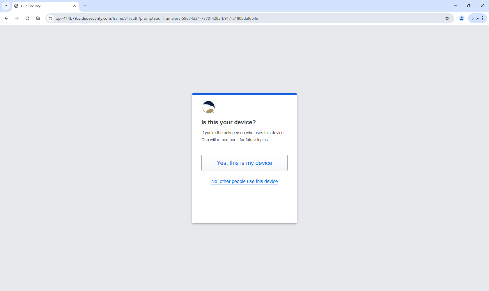

| Contents |
|---|
| 1. Introduction |
| 2. Common Vulnerabilities in IoT Devices |
| 3. Secure Device Authentication |
| 4. Conclusion |

IoT devices have revolutionized our perception towards technology. The idea that smart electronics and appliances can call out requests from the user is fascinating compared to where we were 20 or 30 years ago. Although the concept and the application of these IoT devices aims to improve our lifestyle, it comes with new challenges and risks that technological industries would need to make in the future. Nowadays, with the electronics being much more "smarter", yet are prone to more security threats, can raise doubts and concerns amongst the general public. As discussed in the previous report, malicious attackers will try their hardest to gather any information that they can find about the user (even from smart TVs). With our smart devices, facing a higher chance of cyberattacks, places like schools, universities and companies have resorted to using a method called secure device authentication. This method, as shown as a concept from Figure i, is an important component of ensuring that the device (which was set up by the user) can be trusted while, also, securing one's data. The objective of this report is to further discuss the vulnerabilites that occur with unprotected IoT devices and why authentication is necessary for the protection of every layer of the device: from the software/applications to the device's firmware.
In the last report, I gave a brief discussion about what the Internet-of-Things (IoT) is and how it has contributed to our everyday lives from homes, schools & universities, and businesses. One could concur that IoT devices have made the work for us more manageable, that we have the ability to fulfill assigned tasks at a faster pace directly at our fingertips. For example, most smart refrigerators have a touchscreen display where the user can make any option of their choice like checking the weather, writing a to-do/shopping list, and playing music. However, the IoT devices that we use - on a regular basis - may pertain to some vulnerabilities.
In addition to the details regarding IoT, I provided a quick summary of some vulnerabilities found with IoT devices and offered suggestions of how it can be fixed. But, there is a wide-scaled picture for why these vulnerabilities happen. As there are IoT surface attack areas, each area contains its own issues from the software and communication channels, to the device itself. This report aims to highlight the issues that arise when IoT devices are not protected and are at risk of security breaches. This involves taking a closer look at the issues regarding weak passwords; exploits that are located inside the firmware and insecure APIs. Below, contains a list that was written suggesting 10 reasons as to why these IoT devices are unprotected [7].
After a careful literature review, one would imply these reasons as logical, considering the work that is done through our devices nowadays. Take for example the issue of having weak and/or hardcoded passwords. This poses a major conflict that all of us face when creating multiple accounts. Having weak and reused passwords makes work less complicated for the adversary to gain access to the user's data. This is the reason why companies like Google recommend that their users develop strong passwords. Some may ask the user to change their password over a certain period of time. As an example, on the Georgia Southern portal, a message will ask the students to update their password towards the end of every semester. Although the idea of creating a strong password, frequently, sounds exhausting, it makes sense from a security standpoint. However, there was a study where an argument was made inferring that weak passwords was not the only reason hackers can easily get into a user's account; it is, also, due to the development of the userID. For instance, many banks choose to use the person's Social Security number (SSN) as the userID without confirming the validity of the chosen ID. It was concluded that having both a combined size of userID & password key-space would protect institutions against bulk guessing attacks [6]. It is certain that developing a userID as the person's SSN or other personal information is a risk, strategically. One would agree that the standard of userID and password key-space should be executed to ensure that attacks do not exist.
This video talks about the dangers of having weak/reused passwords and how it can lead adversaries to easily break into the user's account[1].
Video 1: The Dangers of Weak Passwords and How to Create Strong Ones
Also, without any proper privacy protection, the doors are open for hackers to go through the user's device and produce malware. It is crucial that all of us obtain a source of privacy protection such as Norton Lifelock or Webroot. These sources are great aids to detect any abnormalities with a specific device. With reference to obtaining privacy protection, this leads to the security problems that have occurred from the application/software and firmware perspective.
Application Programming Interfaces (or APIs) are components of the device that the user and developers are not aware of. Because the developers do not check for security amongst the APIs, beforehand, it can take any moment for the API, themselves, to experience vulnerabilities. Companies, all across the U.S., have dealt with issues that caused their data to be stolen and exposed to the black markets to make profits. Here are several examples of these occurrences [4].
Companies that have teams - that specialize in advance security - were unaware of the data breaches ( 3/4ths of security professionals forgot to implement adequate security protocols for APIs). From a firmware viewpoint, the vulnerabilities are the attack vectors that are triggered once the device is running. Within the firmware structure, there are eight influencing factors.
According to a review that closely looks at the firmware vulnerabilities and auditing techniques state how each vulnerability is driven by their characteristics and domain limitations [5]. It is within the firmware that is not protected that can exploit flaws inside the IoT system. In the case of device authentication, the firmware plays a critical role with patching IoT nodes on devices that are located in remote settings. Having a weak authentication mechanism in the firmware is more common due to the lack of security support. It puts the normal operation of our devices in jeopardy through misconfigured and erroneous authentication routes [5].
These examples are just a selection of scenarios where vulnerabilities can develop from different parts of an IoT device. How can we ensure that our devices' infrastructure and communication networks will be strictly safe and secure from our adversaries? What can be used to protect our applications from falling into the wrong hands? Thankfully, there is a solution that will combat attacks from every side of our IoT devices. That solution is called secure device authentication. The importance of having a secure device authentication is one that must not be overlooked.
When the term "secure device authentication" comes to mind, one can think of the solution for detecting whether or not the user is the true owner of the device. This security process acts as a barrier to prevent the hacker from stealing personal or sensitive data. Another feature that makes device authentication reliable is that the "authorized" devices can connect to a network. This, greatly, reduces the level of cyberattacks and data breaches to a bare minimum [3]. Device authentication uses many methods that involve more than only entering log-in information.
There are many authentication resources available for the everyday user, such as: Google Authenticator, Microsoft Entra ID, Duo Mobile and SafeNet MobilePASS. As an example, one would like to demonstrate a step-by-step process of what to expect as a student at Georgia Southern; logging into the account and having the Duo Mobile app as a multi-factor authentication tool to complete the process.
First, the user will go to my.georgiasouthern.edu and click the blue button titled "Log In".

Figure 1. Beginning Page

Figure 2. Login Page
Next, the page will show two boxes where the user will enter their Georgia Southern username and password.
After the user clicks "Login", the security process begins with a new page that automatically presents a code that the user would need to enter from the Duo Mobile App. Although, let's say the user wanted to try another option, like entering a passcode provided directly from the Duo Mobile App to enter into the system. The user would click on "Other options" and a list is provided displaying all the options available to enter into the account safely. The user clicks on Duo Mobile passcode and can enter the values there.
Figure 4. Verifying that the user is on the device to log into MyGeorgiaSouthern portal
After clicking "verify", shown on Figure 3c, a message will display whether or not it came from the user's device. Supposing that it is from the user's device, the secure portion - of the login procedure - is completed and it will take the user onto their portal.

Figure 5. The user's account portal after a successful multi-factor authentication process
Overall, it is a great tool that was implemented by Georgia Southern so that the student's data will be protected. However, there is a flaw with this security setup; which is logging onto a device that one uses multiple times. To clarify further, when logging into the system, for the first time, it operates using multi-factor authentication (as it should). However, by the second time and more, the user logs into their Georgia Southern account - without the Duo Mobile authentication - and takes the user directly into the portal.
One would imply that this fault is occurring due to the memorization of the authentication details on that device from the selected browser that one uses. Because of this, the login immediately recognizes the device and takes the user into their portal information. The single recent solution of going through the complete secure process, as demonstrated above, would be to clear all browser history, wiping away the caches. In the future, the developers - that laid the foundations of the university's login feature on the portal - should make necessary adjustments that require the Duo authentication process every time the user logs in.
Overall, the utilization of multi-factor authentication in schools, businesses, and homes are essential since the technology has become much smarter. This method works to ensure that the user holding the device matches the credentials specified on the screen. One could imagine IT and software developers working towards authenticating the device through algorithms. Now that artificial intelligence (AI) and machine learning has flourished, for some years, these tools can be utilized for this purpose. However, one would imply that numerous tests should be conducted so that algorithms are developed with stronger security and can accurately detect the authenticity of users on the device at a faster pace. In the next report, there will be more to cover about the various types of secure device authentication and how each plays an important role that acts as another layer of security.
[1] "Another Reason NOT to Reuse Passwords", YouTube, https://www.youtube.com/watch?v=YvtW_WD8ZEs (accessed Feb. 3, 2025).
[3] "What is authentication? Ensuring Antivirus Protection: The Power of Authentication for Securing Sensitive Data and Networks", ReasonLabs, https://cyberpedia.reasonlabs.com/EN/authentication.html (accessed Feb. 3, 2025).
[4] F. A. Qazi, "Insecure application programming interfaces (apis) in zero-trust networks - proquest", ProQuest, https://www.proquest.com/openview/93d809dffbd1a584b18ee126cd81d4b9/1?pq-origsite=gscholar&cbl=18750&diss=y (accessed Feb. 3, 2025).
[5] T. Bakhshi, B. Ghita, and I. Kuzminykh, "A review of IOT firmware vulnerabilities and auditing techniques", MDPI, https://doi.org/10.3390/s24020708 (accessed Feb. 3, 2025).
[6] D. Florencio, B. Coskun, and C. Herley, "Do strong web passwords accomplish anything? - usenix", https://www.usenix.org/legacy/event/hotsec07/tech/full_papers/florencio/florencio.pdf (accessed Feb. 3, 2025).
[7] "Top IOT device vulnerabilities: How to secure IOT devices", Fortinet, https://www.fortinet.com/resources/cyberglossary/iot-device-vulnerabilities (accessed Feb. 3, 2025).